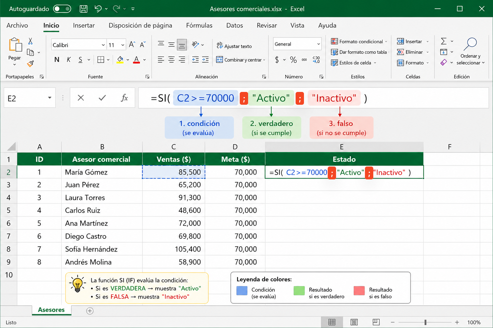

📋 El Memorando — Tu Misión esta Semana
Solicitud de consultoría · Expendio de fábrica · Planta Bimbo Soledad (Atlántico)
Para: Consultores Junior de Datos — NeuroBiz S.A.S. · Equipo TGA04
De: Administración del expendio de fábrica
Asunto: Decidir automáticamente qué se vende, qué se rebaja y qué se retira
A la salida de la planta funciona un expendio de fábrica: allí llegan productos de panadería que ya no alcanzan a viajar a los supermercados porque les quedan pocos días de vida útil, y se venden más baratos. Cada mañana alguien revisa paquete por paquete la fecha de vencimiento y decide a mano. Se equivocan, y se pierde dinero.
El movimiento del inventario depende de los productos próximos a vencer: cada uno obliga a decidir si se rebaja, se mueve a la vitrina de la entrada, se dona antes de la fecha o se da de baja porque ya venció. Tu misión: construir la decisión con =SI() en Excel y con if en Python, y decidir cuál herramienta conviene para cada tarea.
| LS_KEY | tga04_s3 |
| XP máximo | 60 XP |
| Pregunta central | ¿Qué hace el sistema cuando la condición es verdadera, y qué cuando es falsa? ¿Y de dónde sale la condición? |
| Analogía guía | Semáforo: SI está en rojo ENTONCES detenerse FSI · SI el producto venció ENTONCES retirarlo FSI |
| Herramientas | 📊 Excel =SI() · 🐍 Python if · 📝 Pseudocódigo (referencia) |
| Nota | Caso académico con datos simulados. No representa información interna de Grupo Bimbo. |

📚 Marco Teórico
1. ¿Qué es una estructura condicional? 🟢 VIGENTE
La estructura SI-FSI (o if en Python) permite ejecutar instrucciones
solo cuando una condición es verdadera. Si la condición resulta falsa, el algoritmo continúa
sin ejecutar ese bloque. Es la base de toda automatización de decisiones en negocios.
2. La variable clave: días para vencer 🟢 VIGENTE
Toda la decisión depende de un número: días para vencer = fecha de vencimiento − fecha de hoy.
| Días para vencer | Qué significa | Decisión del expendio |
|---|---|---|
| Mayor que 3 | Producto con vida útil suficiente | ✅ Precio normal |
| Entre 0 y 3 | Próximo a vencer (0 = vence hoy y aún se puede vender hoy) | 🏷️ Rebajar o evaluar donación |
| Menor que 0 | La fecha ya pasó | 🚫 Retirar: no es comercializable |
El umbral de 3 días es una decisión de gerencia, no una ley: en la sección de Python simularás otros valores. El 0, en cambio, sí lo fija la norma.
3. Movimiento de inventario: decisiones con lo próximo a vencer 🟢 VIGENTE
En un expendio, el inventario no solo se cuenta: se mueve. Y lo que más urge mover es lo que está más cerca de su fecha. Por eso se usa el criterio FEFO (First Expired, First Out): primero en vencer, primero en salir. Cada decisión de movimiento es, en el fondo, un SI:
| SI… | ENTONCES… (decisión de movimiento) | Por qué |
|---|---|---|
| Llegan dos lotes del mismo producto | Exhibir primero el que vence antes | FEFO: evita que el lote viejo se quede atrás y venza |
dias <= 3 | 🏷️ Rebajar el precio | Un descuento acelera la venta antes de la fecha |
dias <= 1 Y unidades > 10 | 📍 Mover a la vitrina de la entrada o junto a la caja | Más visibilidad = más rotación hoy |
dias <= 3 Y unidades > 20 | 📦 Evaluar donación antes de la fecha | No alcanza a venderse todo; la Ley 1990 de 2019 promueve donar a bancos de alimentos |
dias < 0 | 🚫 Dar de baja del inventario vendible | La fecha ya pasó: se registra como merma |
4. Condiciones compuestas: Y / O (and / or) 🟢 VIGENTE
Y / and exige que ambas sean verdaderas; O / or permite que una sola baste.
| Condición | Interpretación gerencial | Resultado esperado |
|---|---|---|
dias >= 0 Y dias <= 3 | Vigente pero próximo a vencer | Rebajar precio |
dias <= 3 Y unidades > 20 | Muchas unidades sin tiempo para venderlas | Evaluar donación antes de la fecha |
categoria = "Pan tajado" O categoria = "Ponqué" | Aplica a dos líneas de producto | Basta una coincidencia |
5. Errores frecuentes al construir un SI 🟡 EVOLUCIONADO
| Error | Qué cree el estudiante | Corrección |
|---|---|---|
Usar <= en vez de < | "Vence hoy" ya está vencido | Con 0 días aún se vende hoy: la condición de retiro es < 0 |
| Ignorar la rama "No" | Piensa que el rombo tiene una sola salida | Siempre etiquetar Sí / No |
| Confundir Y con O | Cree que basta una condición con Y | Y = ambas; O = al menos una |
| Mirar solo la fecha | Las unidades no importan | Mover o donar depende también de cuántas unidades quedan |
| En Excel: olvidar separador | Escribe =SI(C2<0 "Retirar") | Usar punto y coma: =SI(C2<0;"Retirar";"") |
6. ¿Excel o Python? Una decisión, no una competencia 🟢 VIGENTE
La lógica del SI es la misma en ambas herramientas. Lo que cambia es para qué trabajo sirve mejor cada una. Un buen administrador no elige por costumbre: elige por el tamaño, la frecuencia y el riesgo de la tarea.
| Si la tarea es… | 📊 Excel brilla cuando… | 🐍 Python brilla cuando… |
|---|---|---|
| Tamaño | Son decenas de filas que quieres ver de un vistazo | Son cientos o miles de referencias, o varios archivos |
| Frecuencia | Se hace una vez o de vez en cuando | Se repite cada mañana: se escribe una vez y se ejecuta siempre igual |
| Fechas | HOY() y resta de celdas | date.today() y resta de fechas, igual de simple y sin copiar fórmulas |
| Comparar políticas | Una política por hoja | Decenas de escenarios en un segundo con un bucle |
| Errores humanos | Una fórmula arrastrada mal pasa desapercibida | La misma regla se aplica idéntica a todas las filas |
| Compartir | Todos en la oficina lo pueden abrir | Genera el reporte o la lista de retiro lista para enviar |
📊 Excel — Función =SI() aplicada al expendio
En gestión administrativa, Excel es la primera herramienta donde aparece la lógica condicional.
La función =SI() tiene exactamente la misma estructura que el pseudocódigo: condición, resultado verdadero, resultado falso.
=SI( prueba_lógica ; valor_si_verdadero ; valor_si_falso )En inglés:
=IF( logical_test, value_if_true, value_if_false )

Inventario del expendio — Alerta de retiro
La celda H1 guarda la fecha de corte del conteo (06/11/2026). La columna C calcula los días para vencer
y la columna F decide con =SI(). En la vida real, H1 sería =HOY().
| A | B | C | D | E | F | |
|---|---|---|---|---|---|---|
| 1 | Producto | Vence | Días para vencer | Unidades | Precio | Estado =SI() |
| 2 | Pan para hamburguesa x6 | 05/11/2026 | =B2-$K$1 → -1 | 15 | 7.200 | =SI(C2<0;"🚫 RETIRAR";"✅ Vendible") |
| 3 | Mantecadas x6 | 06/11/2026 | 0 | 30 | 6.300 | ✅ Vendible |
| 4 | Pan tajado integral | 08/11/2026 | 2 | 25 | 8.200 | ✅ Vendible |
| 5 | Ponqué tajado | 03/11/2026 | -3 | 10 | 8.900 | 🚫 RETIRAR |
| 6 | Pan tajado blanco 600 g | 12/11/2026 | 6 | 40 | 7.500 | ✅ Vendible |
Fíjate en las Mantecadas: vencen hoy (0 días) y siguen siendo vendibles hoy. Mañana ya no.
SI() anidado — Tres decisiones de precio
Cuando necesitas más de dos resultados, puedes anidar un =SI() dentro de otro
(equivalente al SI-SINO-SI de la Semana 4). Por ahora, solo observa la lógica:
| C — Días para vencer | G — Decisión | |
|---|---|---|
| 1 | Días para vencer | Decisión de precio |
| 2 | -1 | 🚫 Retirar |
| 3 | 0 | 🏷️ Rebajar 30% |
| 4 | 2 | 🏷️ Rebajar 30% |
| 5 | -3 | 🚫 Retirar |
| 6 | 6 | ✅ Precio normal |
Calculadora interactiva de la función =SI()
Simula lo que haría Excel. Cambia los días para vencer (prueba con 0, con -1 y con 5) y el umbral de rebaja.
Condición compuesta en Excel con Y() y O()
Excel también soporta condiciones múltiples dentro del =SI() usando las funciones =Y() y =O():
// Próximo a vencer Y con muchas unidades: plan especial =SI(Y(C2>=0; C2<=3; D2>20); "📦 Evaluar donación"; "") // Aplica a pan tajado O ponqué =SI(O(H2="Pan tajado"; H2="Ponqué"); "Línea prioritaria"; "Otra línea")
🐍 Python — if aplicado al expendio
Excel te ayudó a diseñar la regla. Python la convierte en una rutina: el mismo código revisa todo el inventario cada mañana, resta fechas sin arrastrar fórmulas y te permite comparar políticas antes de aplicarlas. Aquí no compites contra Excel: tomas decisiones que en una hoja de cálculo serían lentas o propensas a error.
• Python no usa
FSI para cerrar — el bloque se cierra con indentación (4 espacios).• Python usa
and / or en lugar de Y() / O().• Python usa
== para comparar igualdad (no = como en Excel).• Python resta fechas directamente:
(vence - hoy).days da los días para vencer.
⏳ Iniciando motor Python (Pyodide)…
📝 Referencia: Pseudocódigo Cairó (SI-FSI)
📝 Estructura general SI-FSI (Cairó) — ver referencia
SI condicion ENTONCES { instrucciones que solo ocurren si la condición es VERDADERA } FSI
FSI = "Fin Si" — indica dónde termina el bloque condicional.
En Python no existe FSI porque el cierre se marca con indentación (4 espacios).
📝 AlertaRetiroExpendio — pseudocódigo completo
ALGORITMO AlertaRetiroExpendio VARIABLES producto : CADENA dias_para_vencer : ENTERO INICIO ESCRIBIR "Nombre del producto:" LEER producto ESCRIBIR "Días para vencer:" LEER dias_para_vencer SI dias_para_vencer < 0 ENTONCES ESCRIBIR "🚫 RETIRAR: producto vencido" ESCRIBIR "Producto: " + producto FSI ESCRIBIR "Revisión completada." FIN
Prueba de escritorio
| Caso | Entrada | ¿Condición? | ¿Qué imprime? |
|---|---|---|---|
| Caso 1 | dias_para_vencer = -2 | Verdadera | Alerta de retiro + producto + "Revisión completada" |
| Caso 2 | dias_para_vencer = 0 | Falsa | Solo "Revisión completada" (vence hoy: aún se vende hoy) |
📝 PlanEspecial — condición compuesta Y
ALGORITMO PlanEspecialExpendio VARIABLES dias_para_vencer : ENTERO unidades : ENTERO INICIO LEER dias_para_vencer LEER unidades SI dias_para_vencer >= 0 Y dias_para_vencer <= 3 Y unidades > 20 ENTONCES ESCRIBIR "📦 Evaluar donación antes de la fecha" FSI ESCRIBIR "Análisis completado." FIN
⚙️ Actividad Presencial
⏱️ Bloque 1 — Entender la estructura SI · Bloom: Comprender
- Leer el memorando del expendio de fábrica y los KPIs.
- Pregunta abierta al grupo: "¿Alguien ha comprado en un expendio de fábrica? ¿Qué productos encontraron y qué tan cerca estaban de su fecha?"
- Dibujar el rombo de decisión
¿dias_para_vencer < 0?con sus dos salidas: Sí / No. - Con la tabla de la sección 3, decidir en grupo el movimiento de cada producto del inventario: ¿rebajar, mover, donar o dar de baja?
⏱️ Bloque 2 — Excel en vivo · Bloom: Comprender → Aplicar
- Abrir el archivo
Expendio_Soledad_S3.xlsx; escribir la fecha de corte en H1. - Calcular
=B2-$K$1en la columna C y explicar por qué se usa$. - Escribir juntos
=SI(C2<0;"🚫 RETIRAR";"✅ Vendible")y arrastrar. - Cambiar H1 a una fecha dos días después: ¿cuántos productos pasan a RETIRAR?
⏱️ Bloque 3 — Python decide · Bloom: Aplicar → Evaluar
- Ejecutar la Celda 3 y comparar con la hoja de Excel: mismo resultado, sin arrastrar fórmulas.
- En grupos, ejecutar la Celda 4 y escoger una política (umbral y descuento). Cada grupo la defiende en 1 minuto.
- Debate: ¿qué pasa si mañana el inventario tiene 1.800 referencias y hay que decidir antes de abrir a las 7:00 a. m.?
⏱️ Bloque 4 — Misión Expendio · Bloom: Aplicar
Responde cada pregunta y haz clic en Verificar para obtener retroalimentación inmediata.
1 +5 XP — Fórmula Excel
Escribe la fórmula =SI() anidada que decida con los días de C2: "Retirar" si es menor que 0, "Rebajar" si es menor o igual a 3, "Precio normal" en otro caso.
2 +5 XP — Python básico
Escribe el bloque if en Python que imprima "🚫 RETIRAR" si dias_para_vencer < 0. Recuerda la indentación.
3 +5 XP — Condición compuesta
¿Cómo escribirías en Excel "vence entre 0 y 3 días Y tiene más de 20 unidades"? Usa la función =Y().
4 +5 XP — Prueba de escritorio
Con =SI(C2<0;"RETIRAR";"Vendible"), ¿qué muestra Excel con C2 = 2, con C2 = 0 y con C2 = -2? ¿Por qué el producto con 0 días todavía se puede vender hoy?
5 +5 XP — Decisión de herramienta
Para cada tarea elige Excel o Python y justifica con un criterio de la sección 6: (a) revisar hoy las 12 referencias del ejemplo; (b) generar cada mañana la lista de retiro de 1.800 referencias; (c) comparar 15 políticas de descuento antes de la reunión con el jefe de planta.
🏠 HTI — Trabajo Independiente
Consolida la lógica condicional antes de pasar a SI-SINO (Semana 4).
📚 HTI-A — Observación de campo
- Si te queda cerca, visita un expendio de fábrica o la sección de "próximos a vencer" de un supermercado. Si no, revisa los empaques de pan que tengas en casa.
- Anota de 3 productos: nombre, qué dice la etiqueta ("Vence" o "Consumir preferentemente antes de"), fecha y precio.
- Sin datos personales ni fotos de personas. Solo productos y etiquetas.
✏️ HTI-B — Nueva fórmula y nueva decisión
HTI-1 +4 XP
Escribe en Excel la fórmula que muestre "📦 Evaluar donación" si C2 está entre 0 y 2 días Y D2 tiene más de 20 unidades, o "" (vacío) si no.
HTI-2 +4 XP
Escribe el equivalente en Python de HTI-1 usando and. ¿Por qué no se necesita FSI?
HTI-3 +4 XP
En la Celda 4, cambia los supuestos (por ejemplo, que sin descuento solo se venda el 30 %). ¿Cambia tu política elegida? Escribe la política que recomendarías al expendio (umbral y descuento) y qué cifra de la tabla la respalda.
HTI-4 +4 XP
Con los 3 productos que observaste en HTI-A, agrégalos a la lista inventario de la Celda 3, cambia FECHA_CORTE por date.today() y ejecuta.
¿Qué decidió el programa para cada uno? ¿Coincide con lo que viste en la tienda?
🎮 Quiz Interactivo — Semana 3
5 preguntas · Haz clic en la opción correcta · 5 XP por acierto
1. ¿Cuál fórmula marca para retiro un producto cuyos días para vencer están en C2?
✅ Correcto. Con 0 días el producto vence hoy y aún se vende hoy; con -1 ya pasó su fecha. La opción (d) retiraría productos que todavía se pueden vender con descuento.
2. En Python, ¿cómo se cierra un bloque if?
✅ Correcto. Python usa la indentación para delimitar bloques, no palabras clave de cierre.
3. La condición =Y(C2<=3; D2>20) es VERDADERA cuando:
✅ Correcto. =Y() exige que TODAS las condiciones sean verdaderas. Si una falla, el resultado es FALSO.
4. El expendio debe, cada mañana antes de abrir, revisar 1.800 referencias y comparar varias políticas de descuento. ¿Qué decisión de herramienta es más sensata?
✅ Correcto. La lógica es la misma; lo que cambia es la escala y la frecuencia. Una tarea diaria, grande y con escenarios es terreno de Python.
5. Llegan dos lotes de pan tajado: el lote A vence el 08/11 y el lote B el 12/11. Según el criterio FEFO, ¿qué se hace?
✅ Correcto. FEFO = primero en vencer, primero en salir. Si se exhibe primero el lote fresco, el lote A se queda atrás y termina como merma.
📖 Fuentes y Referencias
- Ministerio de la Protección Social. (2005). Resolución 5109 de 2005 — Reglamento técnico de rotulado de alimentos envasados. Art. 3 (definiciones de fecha de vencimiento y de duración mínima) y numeral 5.6 (marcado de fechas). invima.gov.co
- Congreso de Colombia. (2019). Ley 1990 de 2019 — Política para prevenir la pérdida y el desperdicio de alimentos. icbf.gov.co
- Congreso de Colombia. (2024). Ley 2380 de 2024 — incentivos a la donación de alimentos a bancos de alimentos.
- Cairó Battistutti, O. & Guardati Bueno, S. (2022). Metodología de la programación (3ª ed.). Alfaomega. Estructuras selectivas — base del pseudocódigo SI-FSI.
- Microsoft Support. Función SI y función HOY en Excel — documentación oficial. support.microsoft.com
- Python Software Foundation. Python 3 Documentation — Control Flow y módulo
datetime. docs.python.org
XP acumulados esta semana
0 / 60
4h presenciales + 5h trabajo independiente · Equivalencia: 9 horas